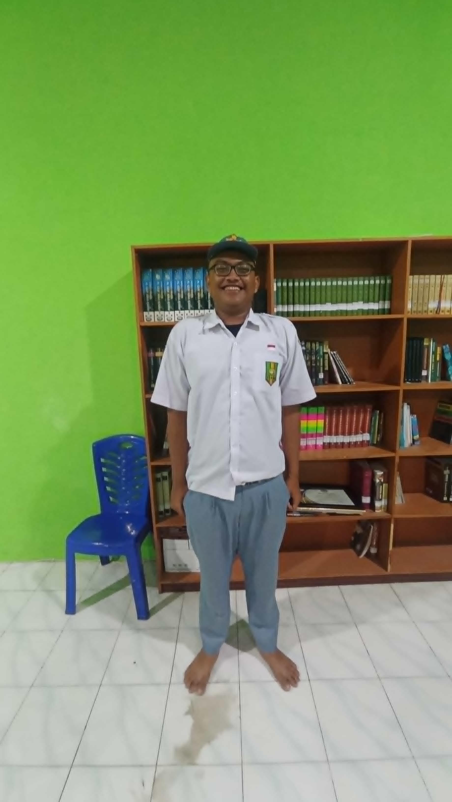
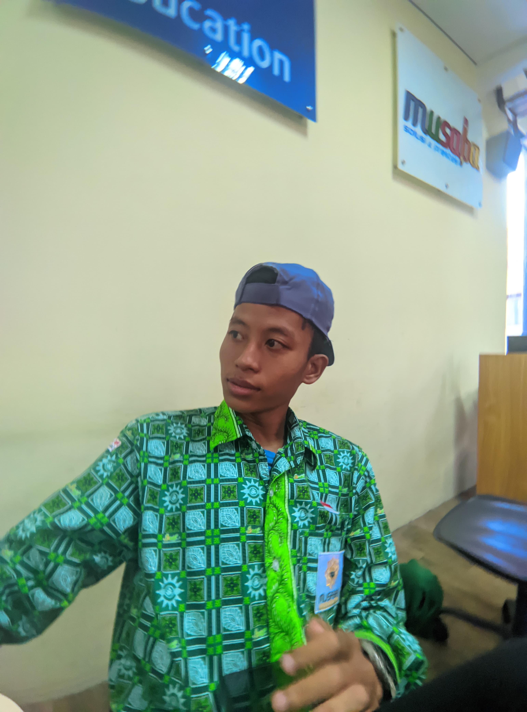
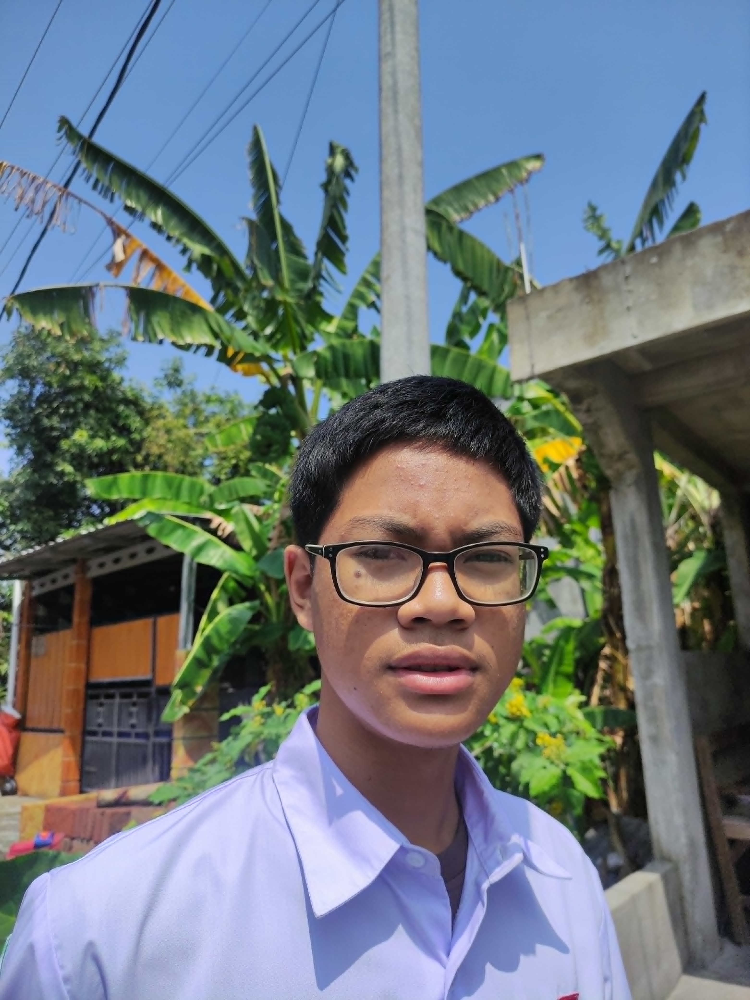

Anggota kelompok 3
Kerja Kelompok 3

Angga Kompling
Penyusun teks

Faqihh
web desainer

Ikshan
Penyusun Teks

marvel
Penyusun Teks
Kerja Kelompok 3
Penyusun teks
web desainer
Penyusun Teks
Penyusun Teks
Kecanduan pornografi bisa menjadi salah satu ancaman bagi pertumbuhan dan perkembangan anak. Ada beberapa risiko yang dapat terjadi ketika anak mengalami kondisi ini, seperti:
1. Gangguan perkembangan pada otak
2. Gangguan emosi pada anak
3. Menurunkan kemampuan bersosialisasi
KE-2
cara pencegahan
1.Pendidikan seksual
Memberikan pendidikan seksual yang benar dan akurat dapat membantu anak memahami seksualitas dan mengurangi rasa penasaran terhadap pornografi.
2.Pembatasan konten
Menggunakan filter dan perangkat
pembatasan konten dewasa pada
perangkat dan router internet.
3.Mengajarkan penggunaan teknologi yang tepat
Orang tua perlu mengajarkan anak
untuk menggunakan teknologi
secara tepat dan cerdas.
Efek kecanduan
Pertama, memberikan pondasi agama. Memberikan pendidikan ilmu agama pada anak sejak dini untuk bekal sang anak agar bisa membedakan antara yang baik dan yang buruk
Kedua, memberikan pendidikan seks sejak dini. Menjelaskan mengenai seks secara menyeluruh mulai dari organ mana yang tidak boleh disentuh orang lain dan hal-hal yang harus dihindari kepada anak.
Ketiga, komunikasi yang intens. Menjalin komunikasi yang baik dengan anak agar merasa dipedulikan dan tidak merasa kesepian hingga terhindar dari segala kegiatan negatif.
Tingkatan dalam Kecanduan Pornografi
Tingkat 1:
Paparannya sangat terbatas dengan periode tonton satu hingga dua kali.
Tingkat 2:
Beberapa kali setahun, tetapi tidak lebih dari enam kali, imajinasinya sangat kecil
Tingkat 3:
Sebulan sekali, mulai menunjukkan tanda-tanda kecanduan. Pada tingkat ini cobalah untuk tidak mengulangi menonton pornografi.
Tingkat 4:
Adiksi porngrafi mulai mengganggu konsentrasi pada tugas sehari-hari beberapa kali dalam sebulan